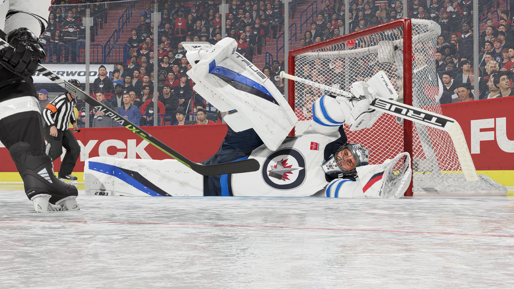
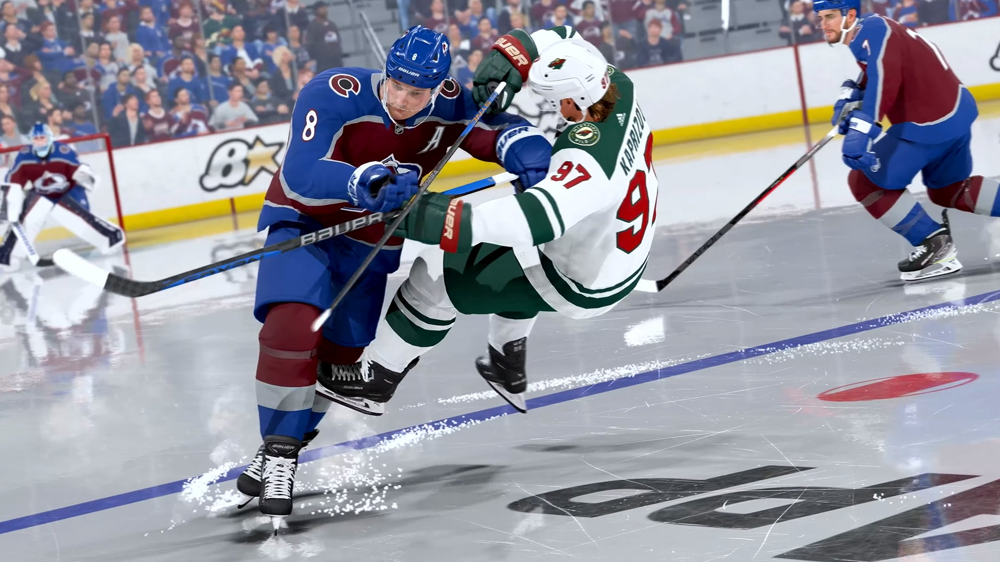
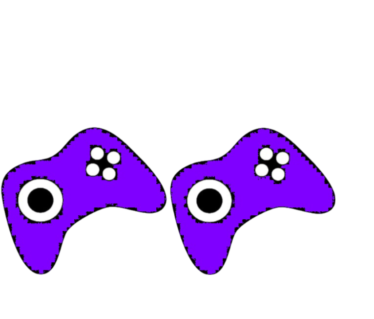

NHL 24: Jäällä samalla tavalla kuin aina

NHL-pelisarja on kaukalon valtias, mutta viimeaikaiset julkaisut ovat saaneet fanit kyseenalaistamaan sarjan kehityksen suunnan. NHL 24 ei valitettavasti tuo paljoa uutta pöytään, ja se saattaa jättää monet fanit kaipaamaan syvempää innovaatiota.
Pelillisesti NHL 24 on jatkumo edellisille vuosille, tarjoten samankaltaisen pelikokemuksen kuin aiemmatkin versiot. Vaikka ydinmekaniikka on edelleen vahva ja nautinnollinen, se ei tarjoa merkittävää uutta peliin. Peli voi tuntua enemmänkin päivitykseltä kuin kokonaan uudelta peliltä, mikä saattaa pettää pelaajia, jotka etsivät merkittävää kehitystä sarjassa.

EA Sports on joutunut kritiikin kohteeksi peliensä samankaltaisuudesta ja innovaation puutteesta. Vaikka NHL 24 tarjoaa joitakin pieniä parannuksia, kuten graafisia päivityksiä ja hienosäätöä pelimekaniikassa, se ei tuo mukanaan tarpeeksi merkittäviä muutoksia pitääkseen fanit todella innostuneina.
Lisäksi, pelin mikromaksuilla ja loot boxeilla täytetty jääkaappi voi aiheuttaa huolta pelaajien keskuudessa. Vaikka nämä elementit eivät välttämättä vaikuta pelin ydinmekaniikkaan, ne voivat silti häiritä pelaajien kokemusta ja luoda tunnetta siitä, että peli on enemmän rahastusta kuin intohimoista pelaamista kohtaan.
Kokonaisuutena NHL 24 on kunnioitettava jääkiekkopeli, mutta sen puute merkittävistä innovaatioista ja EA Sportsin kyseenalaiset käytännöt saattavat varjostaa pelaajien kokemusta. On tärkeää, että pelinkehittäjät kuuntelevat fanien palautetta ja pyrkivät tuomaan enemmän luovuutta ja intohimoa sarjan tuleviin osiin.
